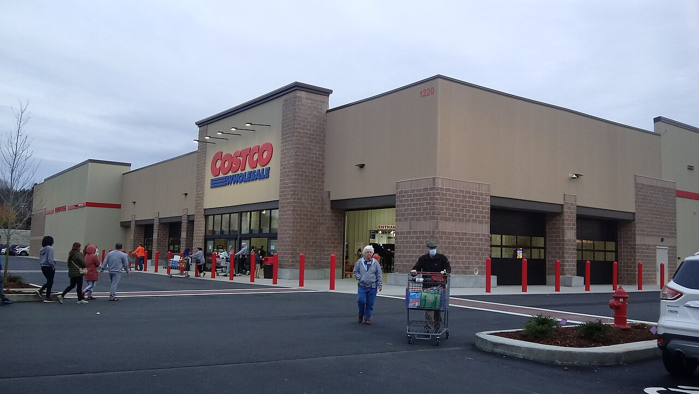

Costco's net income rose 13.9% to $9.2 billion as revenue grew 10.1%


Costco's revenue grew 10.1% to $303.2 billion in fiscal 2026, its fastest growth since fiscal 2022. Net income rose faster, by 13.9% to $9.2 billion, as the operating margin reached 3.9%, the highest of the eight years covered here. Cash from operations grew 18.6%, so free cash flow rose 19.7% to $9.4 billion even with more spent on new warehouses.
Sales growth picked up, helped by gasoline
Revenue growth rose to 10.1%, after 5.0% in fiscal 2024 and 8.2% in fiscal 2025. Net sales, which leave out membership fees, grew 10.1 percent to $297.2 billion. The company said most of the increase came from comparable sales, which rose 8%, with a 5% rise in the average ticket and a 3% rise in how often members shopped. The rest came from warehouses opened since the end of fiscal 2025. Higher gasoline prices also lifted net sales, with the average price per gallon up 12%.
Membership fees rose 11% to $5,907 million. Costco said the growth came from new member sign-ups, fee increases and upgrades to Executive membership. Renewal rates at the end of the year were 92.3% in the U.S. and Canada and 89.8% worldwide.
Over seven years revenue has grown 2.0 times, from $152.7 billion in fiscal 2019, a compound rate of 10.3% a year.
Margins stayed thin but edged up
Revenue minus merchandise costs was 12.8% of total revenue, level with fiscal 2025 at 12.8%. Costco measures gross margin against net sales only. On that basis it fell slightly, and the company said that excluding the effect of higher gasoline prices it was 11.22%, up from fiscal 2025. Refunds of tariffs that the U.S. Supreme Court ruled unlawful also helped: in fiscal 2026 Costco recorded $174 million of refunds as a reduction to merchandise costs. It said part of that money went into lower prices for members.
Selling, general and administrative costs grew 8.9%, more slowly than revenue. They fell to 9.0% of revenue from 9.1%. Operating income rose 12.5% to $11.7 billion, and the operating margin compares with 3.1% in fiscal 2019 to 3.9%.
Net income rose 13.9% to $9.2 billion, and diluted earnings per share rose 14.0% to $20.76. Interest income and other items, net of interest expense, grew to $566 million from $435 million. The effective tax rate was 24.7%, down from 25.1%.
Cash flow grew faster than capital spending
Cash from operations rose 18.6% to $15.8 billion. Costco said the increase came mainly from higher operating income and from less cash tied up in inventory, as it sold goods faster and got better payment terms from suppliers. Capital spending, mostly on new and remodeled warehouses, rose 17.0% to $6.4 billion, or 2.1% of revenue, the highest share in the eight years. Costco opened 28 new warehouses in the year, including three relocations.
Free cash flow rose 19.7% to $9.4 billion, or 3.1% of revenue. It was $3.5 billion in fiscal 2022, when capital spending took 53% of operating cash flow. In fiscal 2026 that share was 41%.
Cash rose and debt stayed flat
Cash and short-term investments rose 39.4% to $21.3 billion at the end of August 2026. Total debt was $6.2 billion, down from $6.9 billion in 2019. That left $15.1 billion more cash than debt, up from $9.5 billion a year earlier and $2.6 billion in 2019.
Property and equipment, net of depreciation, grew 11.7% to $35.6 billion. Shareholders' equity rose 22.8% to $35.8 billion.
Dividends rose; special dividends drove earlier peaks
Costco paid $2.5 billion in dividends, up 12.6%, and spent $848 million buying back shares. Together that was 35% of free cash flow. In April 2026 the board raised the quarterly dividend from $1.30 to $1.47 per share.
Payouts were much larger in two earlier years because of special dividends. A $10.00 per share special dividend cost about $4,430 million in fiscal 2021, and a $15 per share special dividend cost about $6,655 million in fiscal 2024. In those years total payouts were 116% and 147% of free cash flow. The diluted share count was 444 million, about the same as in fiscal 2019.
Eight years of figures
Gross profit for fiscal 2019 is left out of the chart and tables: the figure in EDGAR's structured data does not match revenue minus merchandise costs in Costco's income statement for that year. Fiscal 2023 had 53 weeks; the other years had 52. Revenue includes membership fees; Costco's own gross margin percentage is measured against net sales only.
Sources: Form 10-K (SEC EDGAR) · Form 10-K filing index · EDGAR company facts for Costco · Costco fiscal 2026 fourth-quarter earnings release (Exhibit 99.1) · Fiscal 2021 Form 10-K · Fiscal 2024 Form 10-K. More figures for Costco are on its company page.